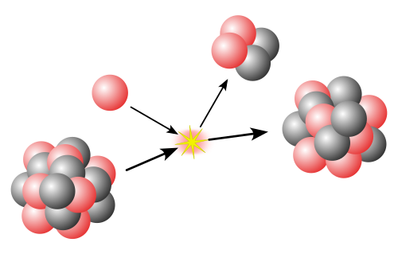

Ağır bir çekirdek yüzlerce nükleon içerebilir . Bu, bazı yaklaşımlarla kuantum mekaniksel bir sistemden ziyade klasik bir sistem olarak ele alınabileceği anlamına gelir . Ortaya çıkan sıvı damla modelinde [ 27 ] , çekirdeğin enerjisi kısmen yüzey geriliminden ve kısmen protonların elektriksel itmesinden kaynaklanır. Sıvı damla modeli , kütle numarasına göre bağlanma enerjisinin genel eğilimi ve nükleer fisyon olgusu da dahil olmak üzere çekirdeklerin birçok özelliğini yeniden üretebilir . Bununla birlikte, bu klasik resmin üzerine, büyük ölçüde Maria Goeppert Mayer [ 28 ] ve J. Hans D. Jensen [ 29 ] tarafından geliştirilen nükleer kabuk modeli kullanılarak tanımlanabilen kuantum mekaniksel etkiler de eklenmiştir. Belirli " sihirli " nötron ve proton sayılarına sahip çekirdekler , kabukları dolu olduğu için özellikle kararlıdır . Nötron ve proton çiftlerinin bozonlar gibi etkileşime girdiği etkileşimli bozon modeli gibi, çekirdek için daha karmaşık başka modeller de önerilmiştir . Ab initio yöntemler, nükleer çoklu parçacık problemini nükleonlardan ve etkileşimlerinden başlayarak, en temelden çözmeye çalışır. Nükleer fizikteki güncel araştırmaların büyük bir kısmı, yüksek spin ve uyarılma enerjisi gibi aşırı koşullar altındaki çekirdeklerin incelenmesiyle ilgilidir . Çekirdekler ayrıca aşırı şekillere ( ragbi topu veya armut benzeri ) veya aşırı nötron-proton oranlarına sahip olabilir. Deneyciler, bir hızlandırıcıdan gelen iyon ışınlarını kullanarak yapay olarak indüklenen füzyon veya nükleon transfer reaksiyonları yoluyla bu tür çekirdekler oluşturabilirler . Daha yüksek enerjili ışınlar, çok yüksek sıcaklıklarda çekirdekler oluşturmak için kullanılabilir ve bu deneylerin normal nükleer maddeden yeni bir duruma, kuark-gluon plazmasına bir faz geçişi ürettiğine dair işaretler vardır ; bu durumda kuarklar , nötron ve protonlarda olduğu gibi üçlü gruplar halinde ayrılmak yerine birbirleriyle karışırlar.
